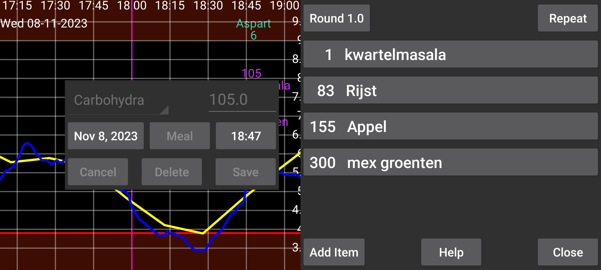
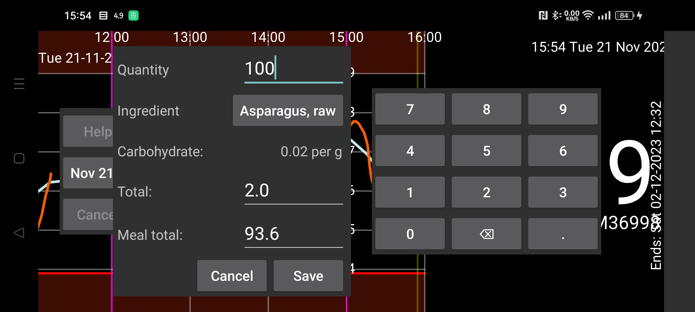

식사의 재료 양을 지정하면 총 탄수화물 함량을 계산합니다. 전체 식사 또는 한 재료의 탄수화물 양을 먼저 지정하면 프로그램이 필요한 재료 양을 계산하도록 할 수도 있습니다. “항목 추가”를 눌러 식사에 항목을 추가합니다. 열린 대화상자에서 재료를 선택하고 그 양(또는 식사 전체나 이 항목의 총 탄수화물)을 지정할 수 있습니다. 선택 또는 이미 지정된 재료를 누르면 정의된 재료 목록으로 이동합니다. 여기서 정의를 눌러 새 재료를 만들 수 있습니다. 재료 이름과 지정한 단위당 탄수화물 함량을 입력할 수 있습니다. 또는 데이터베이스 를 눌러 식품 성분 데이터베이스로 이동해 재료를 검색하고 식품의 성분을 확인한 뒤 선택을 눌러 그 식품의 이름과 탄수화물 함량을 재료 정의에 넣을 수 있습니다.